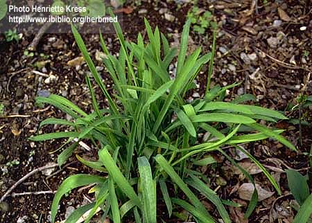

Bupleurum
falcatum L.
Taxonomic Details

----- Correct Name
----- Classification
----- Synonyms
----- Common Names
Other Biological Details
----- Habit and Habitat
----- Diagnostic Features
----- Reproductive Biology
---------- Breeding System
---------- Phenology
---------- Pollinators
---------- Seed Biology
----------Seed Germination
----------Cultivation
----- Major Pests and Diseases
Economic Potential and Uses
----- Parts Used
-----Uses
-----Medicinal Uses
----- Harvesting Practices
----- Produce and Products
----- Chemistry
----- Processing Techniques
----- Other uses
----- Economic Potential to the Country
----- Export Potential
Miscellaneous Information
Literature
Taxonomic
Details
Correct Name: Bupleurum falcatum L.,
Family: Umbelliferae
Synonyms : Bupleurum virgatum; B. nervousum;
Common Names :
English: Thorow-wax, Sickle Hare's ear
Back to Top
Other
Biological Details
HABIT & HABITAT :
An annual or perennial growing to 1 m by 0.6 m . It is hardy to zone 3. It is in flower from July to October. The flowers
are hermaphrodite (have both male and female organs) and are pollinated by Insects.
The plant is self-fertile. We rate it 3 out of 5 for usefulness. It grows in the
Waste places and hedge banks.
It is found in the Cultivated areas, Forests, Rocky open places, patanas in the
montane zone, 3000-7000ft. common on the Eastern (Uva) slopesand shady forests
floor,
Availability :
BioticZones: Himalaya,Temperate Himalayas,Temperate regions and Tropical Himalayas,
Soil: Soil rich in humus content is favourable for it's growth and development.
Misc: It is also found from Baltistan, Kashmir to Bhutan, Khasi hills and Pakistan
to Bhutan,
Country: Asia, Bhutan ,Central Europe, Central Asia, Eurasia, Europe,India, Japan
and S outh America,
Zone: Central, East, North, North East, South and Wesern zonest,
State: Arunachal Pradesh, Himachal Pradesh, Jammu & Kashmir and Meghalaya.
District: Chamba, Kameng, Kinnaur, Kullu, Lahaul Spiti, and Simla,
Status :
Back to Top
DIAGNOSTIC
FEATURES
An annual or perennial growing stem erect,
1-3 ft., with many ascending branches, cylindrical, striate, glabrous; long
grass like, sessile, 2.5-4.5 inch long, amplexicaul, but not sheathing at the
base, linear, acuminate, mucronate at the apex,glabrous, glaucous green, with
a very narrow horny margin, veins slender, nearly slender, nearly parallel,
distinct and unbranched.
Back to Top
REPRODUCTIVE BIOLOGY
:
General umbels long
stalked, numerous,
arranged in lax, elongated, terminal, some what corymbose panicles,, rays 4-6,
general involucre of 3-6 lanceolate-linear very acuminate bracts, partial
umbels of
6-8 flowered peduncle very short, partial involucre of 4 or 5 bracts rather
exceeding flower, petiole distant, broad, point much inflexed; fruit rather
over 1/8 inch, ovoid, brown, shining, mericarps rounded on back with the primary
ribs prominent, and with a broad, conspicuous dark vitta in each furrow, often
with a smaller one on either side.
Breeding System :
Phenology : Flowering usually occurs during June-October
and also occurs during February-August; and is of lemon-yellow in colour.
Pollinators: They are pollinated by Insects
Seed Biology :
Seed Germination: Seed - sow spring
in a cold frame. The seed usually germinates in 2 - 8 weeks at 15°c.
Prick out the seedlings into individual pots when they are large enough to handle
and plant them out in the summer or following spring.
Division
in spring. Very easy, larger clumps can be planted direct into their permanent
positions. It is best to pot up smaller clumps and grow them on in a cold frame
until they are well rooted before planting them out in the summer.
Cultivation :
An easily cultivated plant, it succeeds in a sunny position in most fertile
well-drained soils. The plant prefers light (sandy), medium (loamy)
and heavy (clay) soils and requires well-drained soil. The plant prefers acid,
neutral and basic (alkaline) soils. It can grow in semi-shade (light woodland)
or no shade. It requires dry or moist soil.
Back to Top
Major Pests and Diseases:
Pests:
Diseases:
Back to Top
Economic
Potential and Uses
Parts used: Leaves; Root and wood
Uses:
-
Leaves and young shoots - cooked. The new growth in spring and autumn
is used. It is a good source of rutin.
- The roots are
edible.
Medicinal Uses
Alterative; Analgesic; Antibacterial; Anti inflammatory; Antiperiodic; Antipyretic;
Antiviral; Carminative; Diaphoretic; Emmenagogue; Haemolytic; Pectoral; Sedative.
This species is closely related to B. chinense and quite possibly has the same
uses. It is certainly worthy f some research. The uses of B. chinense are as follows:-
Bei chai hu root has been used in traditional Chinese
medicine for at least 2,000 years. It is a bitter herb that is used to
harmonize the body, balancing the different organs and energies within the
body.
It strengthens the digestive tract, acts as a tonic for the liver and circulatory
system, lowers fevers and has anti-viral effects.
The root is alterative, analgesic, antibacterial,
anti-inflammatory, antiperiodic, antipyretic, antiviral, carminative, diaphoretic,
emmenagogue, haemolytic, hepatic, pectoral, sedative. It is taken internally in the treatment of malaria,
black water fever, uterine and rectal prolapse, haemorrhoids, sluggish liver, menstrual
disorders, abdominal bloating etc. The roots are harvested in the autumn
and can be used fresh or dried.
The root contains saikosides. These saponin-like
substances have been shown to protect the liver from toxicity whilst also strengthening
its function, even in people with immune system disorders. These saikosides
also stimulate the body's production of corticosteroids and increase their anti-inflammatory
affect.
The plant is often used in preparations with other
herbs to treat the side effects of steroids.
Harvesting Practices
Produce and Products
Back to Top
Chemistry
Two malonylated olecanane type triterpene oligogly
cosides,malonysaikosapopnius0a and -d were isolated from the roots.Presence of
the polyacetylenes,saikodiyne A(C15H20O2),B(C15H18O2)
and C(C17H22O2) along with
2Z-9Z-pentadecadiene-4,6-diyn-1-ol has also been reported in the
roots.Saikosaponins, the ative ingredients of the plant are used as
tranquillizers,analgesics anti-coughing agents and inhepatophathy.Saikosaponin-d
at a concentration of more than 5microM inactivated measles virus and herpes
simplex virus at room temperature.Saikosaponin-d markedly increased the random
migration of resident peritoneal macrophages and decreased spleen cell
proliferative response to T-cell mitogen. Saikosaponin form an ingredient of
antitumour pharmaceuticals.A water soluble anti-ulcer crude polysaccharide
fraction prepared from the root was reported to present HCL/ethanol induced
alcerogenesis in mice significantly.Boiling water extract of root enhanced the
mutagenic activity of Trp-p-1,Trp-P-2 and benzo[a]pyrene with S9.
The roots are used as a major component to prepare Chinese Japanese
traditional medicines.The mitogenic and anti-complementary activity of bioactive
pectic polysaccharides from the plant may be attributed to the action of
polysaccharides but not lipopolysaccharide.The anti-complementary neutral
polysaccharide.BR-5-1 has been isolated and purified from the roots.It is
compared of mainly L-arabinose and D-glucose in a molar ratio of 9:10; the
alpha-L-arabinan component showed the highest anti-complementary activity.
Back to Top
Processing Techniques
Back to Top
Other Uses
-
The old plant is used as a fuel.
-
Roots of the species is reported to be used for liver troubles and stomach
complaints.
Back to Top
Economical
Potential to the country
Back to Top
Export Potential
Back to Top
Miscellaneous
Information
Back to Top
Literature
- A Barefoot Doctors Manual. Running Press ISBN 0-914294-92-X
- Bird. R. (Editor) Growing from Seed. Volume 3. Thompson and Morgan. 1989
- Bown. D. Encyclopaedia of Herbs and their Uses. Dorling Kindersley, London.
1995 ISBN 0-7513-020-31
- Brooklyn Botanic Garden Oriental Herbs and Vegetables, Vol 39 No. 2. Brooklyn
Botanic Garden 1986
- Chevallier. A. The Encyclopedia of Medicinal Plants Dorling Kindersley.
London 1996 ISBN 9-780751-303148
- Chittendon.F RHS Dictionary of Plants plus Supplement. 1956 Oxford University
Press 1951
- Clapham, Tootin and Warburg. Flora of the British Isles. Cambridge University
Press 1962
- Data (Common Names, Uses, Distribution) from the
USDA/ARS NPGS's
GRIN taxonomic database.
- Duke. J. A. and Ayensu. E. S. Medicinal Plants of China Reference Publications,
Inc. 1985 ISBN 0-917256-20-4
- Ethnobotany Data (common names, uses, countries) from the Ethnobotany
Database Links, Photos, Suppliers from Hortiplex Plant Database Photo From Henriette's plant pictures
- Hedrick. U. P. Sturtevant's Edible Plants of the World. Dover Publications
1972 ISBN 0-486-20459-6.
- http://www.ibiblio.org/herbmed/pictures/p03/pages/bupleurum-falcatum.htm
- Huxley. A. The New RHS Dictionary of Gardening. 1992. MacMillan Press
1992 ISBN 0-333-47494-5
- Kiritikar and Basu's illustrated Indian
medicinal plants 5 0.
- Kariyone. T. Atlas of Medicinal Plants.
- Kunkel. G. Plants for Human Consumption. Koeltz Scientific Books 1984
ISBN 3874292169
- Reid. B. E. Famine Foods of the Chiu-Huang Pen-ts'ao. Taipei. Southern
Materials Centre 1977
- Sasya Sahyadri- A CD
on Plants of Western Ghats, 2003, K.N. Ganeshaiah.
- Stuart. Rev. G. A. Chinese Materia Medica. Taipei. Southern Materials
Centre
- Tanaka. T. Tanaka's Cyclopaedia of Edible Plants of the World. Keigaku
Publishing 1976
- Thomas. G. S. Perennial Garden Plants J. M. Dent & Sons, London. 1990
ISBN 0 460 86048 8
- Trimen,H.,1974,A Hand book to the flora of Ceylon,
Part-II, M/S Bishensingh Mahendrapal singh, Dehradun.p 277
Back to Top